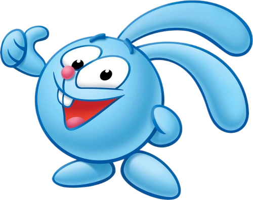

Бараш Поэт-лирик, меланхолик. Любит писать стихи о печали, но также любит веселиться.
Легко раним и может заплакать в трудной ситуации. Обладает множеством скрытых талантов.Пин Пингвин, изобретатель. Создал Биби. Живет в холодильнике и иногда употребляет немецкие слова. Рассеян.Ёжик Серьезный и спокойный друг Кроша. Хорошо воспитан и рассудителен, что помогает ему справляться с активностью и напористостью друга.
Иногда застенчив и стеснителен.Кар-карыч Ворон-артист с бурным прошлым. Много путешествовал, выступал в цирке и пел.
Любит быть в центре внимания и иногда прихвастнуть.Копатыч Добрый и хозяйственный медведь-огородник. Выращивает овощи для всех Смешариков. Очень сильный и прямолинеен.

Крош Веселый и энергичный кролик-непоседа. Любит приключения и всегда втягивает Ёжика в свои авантюры.
Оптимист и экспериментатор.Лосяш Умный лось-учёный. Астроном, интересуется биологией, химией и другими науками. Серьезен и любит читать книги.Нюша Девочка-хрюшка, мечтающая стать принцессой. Неотразимая красавица, следит за модой. Любопытна и умеет манипулировать окружающими.Совунья Сова-врач, раньше была преподавателем физкультуры. Очень хозяйственна и прагматична. Любит спорт и свежий воздух.